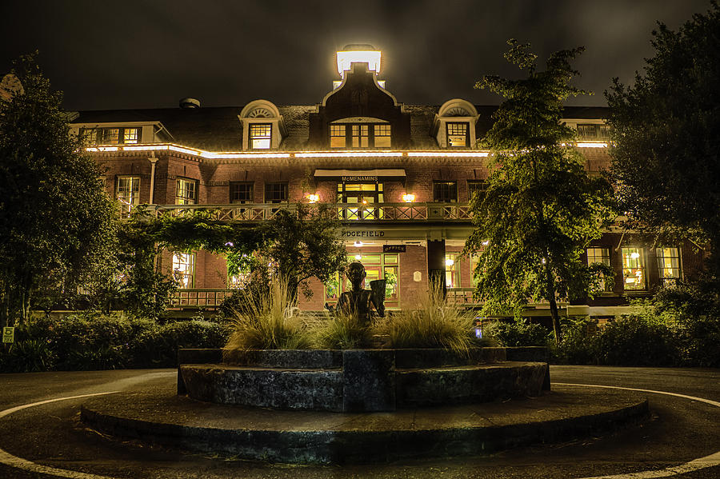

Education & Job History
Education
I graduated at Gresham High School in 2009. After high school I attended Mt.Hood Community College where i changed majors many time. I ended up with an associated degree in natural resources and technologies.
- Gresham High School
- Mt.Hood Community College

Jobs
I started my first job at 16 and have maintained a full time job since then. I worked for 4 years at Fred Meyer. After that I went to work at McMenamins. I worked in and managed 4 different departments with McMenamins in my 9 years with the company.
- Fred Meyer
CCK Parcel / Customer Service Desk Agent / Cashier - McMenamins
Hotel AAM / Housekeeping AM / Restaurant AAM / Bars AAM
